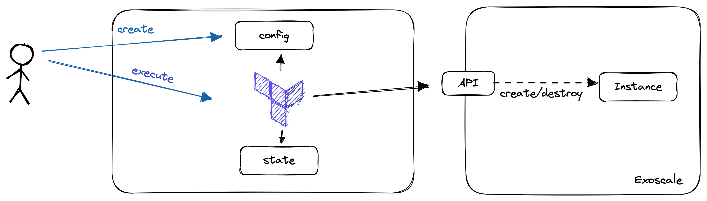

In this lab, you will:
In the future, it will be more comfortable if you're able to use terraform from your PC and IDE.
To install OpenTofu, refer to the respective documentation here:
Please ensure, that the OpenTofu binary is in your path!
To check if terraform is installed and as accessible, open a shell and run: tofu version. This should return the version of OpenTofu. If not and you changed the PATH before, ensure that you restarted your terminal and the Terraform Binary is located in a directory which is accessible there.
Exoscale is a European Cloud Provider, which provides services as:
During this lab, we will deal with virtual instances and object storage. In the first step, we will provision a virtual machine there.
You can log in to the Exoscale Console here.
There are many steps to get infrastructure working when doing this manually This would be fairly enough to try out some new things, but in the real world you might want to do this in a more reproducible and scalable way.
This is where Infrastructure-as-Code comes into play. When you are provisioning 100s of instances, you might not want to click through the consoles for every one you are provisioning. Infrastructure-as-Code (IaC) gives you the possibility to configure your instances:
Let's take a closer look on all of this.
"Infrastructure-as-Code is an approach to infrastructure-automation based on practices from software development. It emphasizes consisten, repeatable routines for provisioning and changing systems and their configuration. You make changes to code, then use automation to tsest and apply those changes to your systems. (Kief Morris(2020), Infrastructure-as-Code, 2nd Edition)"
When we're talking about Infrastructure-as-Code, we are no more creating our Infrastructure via the UI (ClickOps). Instead, we are writing Code, mainly in a declarative way to describe the state, we want our Infrastructure to be in after it is applied.
Declarative configuration means that you express your intention (desired state), and a tool takes care of transitioning the managed objects to this state. Using imperative language, you would tell the tooling what it should do. You can distinguish between these two styles using the following statements:
Please note, that each declarative tool, will have some kind of imperative logic in it to transition to the state.
When we're provisioning Infrastructure-as-Code, we often have the possibility to modularize components, as well as having mechanisms in there, which help us creating multiple, similar objects. This are practices, we know from typical software development. As we are using practices from Software Development, we should also treat our Infrastructure as such. Therefore, the code should be versioned, there should be automatic tests in place and pull requests should be on the order of the day.
There are many tools out there for Infrastructure-as-Code like:
Which tool you use, often depends on your own preferences and your use-cases. In this lab, we will take a closer look on OpenTofu.
Further Information / Videos:
Before we will start with our first configuration, we will put some light on OpenTofu.
OpenTofu is an Infrastructure-as-Code tool forked from Terraform which was initially developed by Hashicorp. It uses a declarative language to describe infrastructure. The language used is the "Hashicorp Configuration Language (HCL)". It is designed to work with many cloud providers. Nevertheless, it is not really cloud-agnostic as knowledge about the individual providers is needed when writing the code.
To start using OpenTofu, we should be familiar with the following terms:
For this lab, we will use a local state, Exoscale as provider and a Compute resource to create our Virtual Machine.
Your Boss heard about a new technique to provision Kubernetes Clusters and that Cloud Providers provide managed kubernetes Services. He tells you that you should get familiar with this and provision a SKS Cluster using OpenTofu
versions.tf in your directoryterraform {
required_providers {
exoscale = {
source = "exoscale/exoscale"
version = "0.54.1"
}
}
}
provider "exoscale" {
key = "key"
secret = "secret"
}
tofu init
Initializing the backend...
Initializing provider plugins...
- Installing exoscale/exoscale v0.54.1...
OpenTofu has been successfully initialized!
You may now begin working with OpenTofu. Try running "tofu plan" to see
any changes that are required for your infrastructure. All OpenTofu commands
should now work.
If you ever set or change modules or backend configuration for OpenTofu,
rerun this command to reinitialize your working directory. If you forget, other
commands will detect it and remind you to do so if necessary.
In the second step, we will create security groups that will be needed to provision our SKS Cluster ...
To do so, we'll create a second file called main.tf. Furthermore, we copy the following configuration in this file:
resource "exoscale_security_group" "my_security_group" {
name = "my-sks-cluster-sg"
}
resource "exoscale_security_group_rule" "kubelet" {
security_group_id = exoscale_security_group.my_security_group.id
description = "Kubelet"
type = "INGRESS"
protocol = "TCP"
start_port = 10250
end_port = 10250
# (beetwen worker nodes only)
user_security_group_id = exoscale_security_group.my_security_group.id
}
resource "exoscale_security_group_rule" "cilium_vxlan" {
security_group_id = exoscale_security_group.my_security_group.id
description = "Cilium VXLAN"
type = "INGRESS"
protocol = "UDP"
start_port = 8472
end_port = 8472
user_security_group_id = exoscale_security_group.my_security_group.id
}
resource "exoscale_security_group_rule" "cilium_health" {
security_group_id = exoscale_security_group.my_security_group.id
description = "Cilium Health Check"
type = "INGRESS"
protocol = "ICMP"
icmp_code = 0
icmp_type = 8
user_security_group_id = exoscale_security_group.my_security_group.id
}
resource "exoscale_security_group_rule" "cilium_health_tcp" {
security_group_id = exoscale_security_group.my_security_group.id
description = "Cilium Health Check"
type = "INGRESS"
protocol = "TCP"
start_port = 4240
end_port = 4240
user_security_group_id = exoscale_security_group.my_security_group.id
}
Data Sources are here to get configurations from your cloud provider, but will change nothing and are used for referencing in other objects
Resources are objects you are managing with terraform
tofu plan
tofu apply
Plan: 5 to add, 0 to change, 0 to destroy.
Do you want to perform these actions?
OpenTofu will perform the actions described above.
Only 'yes' will be accepted to approve.
Enter a value: yes
exoscale_security_group.my_security_group: Creating...
exoscale_security_group.my_security_group: Creation complete after 4s [id=336902ef-51f6-4982-a276-2ee474620f89]
exoscale_security_group_rule.cilium_vxlan: Creating...
exoscale_security_group_rule.kubelet: Creating...
exoscale_security_group_rule.cilium_health_tcp: Creating...
exoscale_security_group_rule.cilium_health: Creating...
exoscale_security_group_rule.cilium_vxlan: Creation complete after 4s [id=c33483ae-b116-4096-9d4b-139168784f14]
exoscale_security_group_rule.kubelet: Creation complete after 4s [id=67771f1d-fc2a-4caf-b9d1-9d6a6cd1b114]
exoscale_security_group_rule.cilium_health_tcp: Creation complete after 4s [id=85755d96-6380-480f-bc91-9e5eb1326aa7]
exoscale_security_group_rule.cilium_health: Creation complete after 4s [id=925b0167-411b-4fcf-a681-cf9feda1cf0f]
Apply complete! Resources: 5 added, 0 changed, 0 destroyed.
tofu destroy
OpenTofu used the selected providers to generate the following execution plan. Resource actions are indicated with the following symbols:
- destroy
OpenTofu will perform the following actions:
# exoscale_security_group.my_security_group will be destroyed
- resource "exoscale_security_group" "my_security_group" {
- id = "336902ef-51f6-4982-a276-2ee474620f89" -> null
- name = "my-sks-cluster-sg" -> null
}
# exoscale_security_group_rule.cilium_health will be destroyed
- resource "exoscale_security_group_rule" "cilium_health" {
- description = "Cilium Health Check" -> null
- icmp_code = 0 -> null
- icmp_type = 8 -> null
- id = "925b0167-411b-4fcf-a681-cf9feda1cf0f" -> null
- protocol = "ICMP" -> null
- security_group = "my-sks-cluster-sg" -> null
- security_group_id = "336902ef-51f6-4982-a276-2ee474620f89" -> null
- type = "INGRESS" -> null
- user_security_group = "my-sks-cluster-sg" -> null
- user_security_group_id = "336902ef-51f6-4982-a276-2ee474620f89" -> null
}
# exoscale_security_group_rule.cilium_health_tcp will be destroyed
- resource "exoscale_security_group_rule" "cilium_health_tcp" {
- description = "Cilium Health Check" -> null
- end_port = 4240 -> null
- id = "85755d96-6380-480f-bc91-9e5eb1326aa7" -> null
- protocol = "TCP" -> null
- security_group = "my-sks-cluster-sg" -> null
- security_group_id = "336902ef-51f6-4982-a276-2ee474620f89" -> null
- start_port = 4240 -> null
- type = "INGRESS" -> null
- user_security_group = "my-sks-cluster-sg" -> null
- user_security_group_id = "336902ef-51f6-4982-a276-2ee474620f89" -> null
}
# exoscale_security_group_rule.cilium_vxlan will be destroyed
- resource "exoscale_security_group_rule" "cilium_vxlan" {
- description = "Cilium VXLAN" -> null
- end_port = 8472 -> null
- id = "c33483ae-b116-4096-9d4b-139168784f14" -> null
- protocol = "UDP" -> null
- security_group = "my-sks-cluster-sg" -> null
- security_group_id = "336902ef-51f6-4982-a276-2ee474620f89" -> null
- start_port = 8472 -> null
- type = "INGRESS" -> null
- user_security_group = "my-sks-cluster-sg" -> null
- user_security_group_id = "336902ef-51f6-4982-a276-2ee474620f89" -> null
}
# exoscale_security_group_rule.kubelet will be destroyed
- resource "exoscale_security_group_rule" "kubelet" {
- description = "Kubelet" -> null
- end_port = 10250 -> null
- id = "67771f1d-fc2a-4caf-b9d1-9d6a6cd1b114" -> null
- protocol = "TCP" -> null
- security_group = "my-sks-cluster-sg" -> null
- security_group_id = "336902ef-51f6-4982-a276-2ee474620f89" -> null
- start_port = 10250 -> null
- type = "INGRESS" -> null
- user_security_group = "my-sks-cluster-sg" -> null
- user_security_group_id = "336902ef-51f6-4982-a276-2ee474620f89" -> null
}
Plan: 0 to add, 0 to change, 5 to destroy.
Now we want to create an SKS Cluster with OpenTofu. To do so, we will create a new file called sks.tf and copy the following configuration in it:
locals {
zone = "at-vie-2"
}
resource "exoscale_sks_cluster" "my_sks_cluster" {
zone = local.zone
name = "my-sks-cluster"
cni = "cilium"
}
The locals block defines a local variable named zone with a value of "at-vie-2". Local variables are convenient to avoid hardcoding values multiple times in the configuration.
The resource block defines a resource of type exoscale_sks_cluster named my_sks_cluster. This resource represents an SKS (Simple Kubernetes Service) cluster on Exoscale, a cloud provider.
The zone attribute of the exoscale_sks_cluster resource is set to the local variable zone, which means the SKS cluster will be created in the "at-vie-2" zone.
The name attribute is set to "my-sks-cluster", which will be the name of the SKS cluster.
The cni attribute is set to "cilium", which specifies that the Cilium CNI (Container Network Interface) plugin will be used for networking in the Kubernetes cluster.
After saving the configuration, run tofu init to initialize the directory and download the Exoscale provider.
Then run tofu plan to see what changes will be applied to the infrastructure. You should see the following output:
OpenTofu used the selected providers to generate the following execution plan. Resource actions are indicated with the following symbols:
+ create
OpenTofu will perform the following actions:
# exoscale_security_group.my_security_group will be created
+ resource "exoscale_security_group" "my_security_group" {
+ id = (known after apply)
+ name = "my-sks-cluster-sg"
}
# exoscale_security_group_rule.cilium_health will be created
+ resource "exoscale_security_group_rule" "cilium_health" {
+ description = "Cilium Health Check"
+ icmp_code = 0
+ icmp_type = 8
+ id = (known after apply)
+ protocol = "ICMP"
+ public_security_group = (known after apply)
+ security_group = (known after apply)
+ security_group_id = (known after apply)
+ type = "INGRESS"
+ user_security_group = (known after apply)
+ user_security_group_id = (known after apply)
}
# exoscale_security_group_rule.cilium_health_tcp will be created
+ resource "exoscale_security_group_rule" "cilium_health_tcp" {
+ description = "Cilium Health Check"
+ end_port = 4240
+ id = (known after apply)
+ protocol = "TCP"
+ public_security_group = (known after apply)
+ security_group = (known after apply)
+ security_group_id = (known after apply)
+ start_port = 4240
+ type = "INGRESS"
+ user_security_group = (known after apply)
+ user_security_group_id = (known after apply)
}
# exoscale_security_group_rule.cilium_vxlan will be created
+ resource "exoscale_security_group_rule" "cilium_vxlan" {
+ description = "Cilium VXLAN"
+ end_port = 8472
+ id = (known after apply)
+ protocol = "UDP"
+ public_security_group = (known after apply)
+ security_group = (known after apply)
+ security_group_id = (known after apply)
+ start_port = 8472
+ type = "INGRESS"
+ user_security_group = (known after apply)
+ user_security_group_id = (known after apply)
}
# exoscale_security_group_rule.kubelet will be created
+ resource "exoscale_security_group_rule" "kubelet" {
+ description = "Kubelet"
+ end_port = 10250
+ id = (known after apply)
+ protocol = "TCP"
+ public_security_group = (known after apply)
+ security_group = (known after apply)
+ security_group_id = (known after apply)
+ start_port = 10250
+ type = "INGRESS"
+ user_security_group = (known after apply)
+ user_security_group_id = (known after apply)
}
# exoscale_sks_cluster.my_sks_cluster will be created
+ resource "exoscale_sks_cluster" "my_sks_cluster" {
+ addons = (known after apply)
+ aggregation_ca = (known after apply)
+ cni = "cilium"
+ control_plane_ca = (known after apply)
+ created_at = (known after apply)
+ endpoint = (known after apply)
+ exoscale_ccm = true
+ id = (known after apply)
+ kubelet_ca = (known after apply)
+ metrics_server = true
+ name = "my-sks-cluster"
+ nodepools = (known after apply)
+ service_level = "pro"
+ state = (known after apply)
+ version = (known after apply)
+ zone = "at-vie-2"
}
Plan: 6 to add, 0 to change, 0 to destroy.
If you are happy with the changes, run tofu apply to apply them. You should see the following output:
Plan: 6 to add, 0 to change, 0 to destroy.
Do you want to perform these actions?
OpenTofu will perform the actions described above.
Only 'yes' will be accepted to approve.
Enter a value: yes
exoscale_security_group.my_security_group: Creating...
exoscale_sks_cluster.my_sks_cluster: Creating...
exoscale_security_group.my_security_group: Creation complete after 3s [id=40097281-ed1c-46f0-b234-72a743317036]
exoscale_security_group_rule.cilium_health: Creating...
exoscale_security_group_rule.cilium_vxlan: Creating...
exoscale_security_group_rule.kubelet: Creating...
exoscale_security_group_rule.cilium_health_tcp: Creating...
exoscale_security_group_rule.cilium_vxlan: Creation complete after 4s [id=8595985e-bcb4-410e-85dc-898248f42b69]
exoscale_security_group_rule.kubelet: Creation complete after 4s [id=8be196cc-ea4a-4e99-b868-c1e47663afc9]
exoscale_security_group_rule.cilium_health_tcp: Creation complete after 4s [id=0d4c2888-4b81-4ad7-8dfc-f41cd74f7575]
exoscale_sks_cluster.my_sks_cluster: Still creating... [10s elapsed]
exoscale_security_group_rule.cilium_health: Creation complete after 7s [id=8138882b-30db-44ed-8dbd-b94e7736a559]
exoscale_sks_cluster.my_sks_cluster: Still creating... [20s elapsed]
exoscale_sks_cluster.my_sks_cluster: Still creating... [30s elapsed]
exoscale_sks_cluster.my_sks_cluster: Still creating... [40s elapsed]
exoscale_sks_cluster.my_sks_cluster: Still creating... [50s elapsed]
exoscale_sks_cluster.my_sks_cluster: Still creating... [1m0s elapsed]
exoscale_sks_cluster.my_sks_cluster: Still creating... [1m10s elapsed]
exoscale_sks_cluster.my_sks_cluster: Still creating... [1m20s elapsed]
exoscale_sks_cluster.my_sks_cluster: Still creating... [1m30s elapsed]
exoscale_sks_cluster.my_sks_cluster: Creation complete after 1m40s [id=79972308-1962-4639-b926-6f931976cedc]
Apply complete! Resources: 6 added, 0 changed, 0 destroyed.
Right, you need the Kubernetes Configuration to access your cluster. It would be possible to get it from the Exoscale Console, but we want to do it with OpenTofu.
To do so, we will create a new file called kubeconfig.tf and copy the following configuration in it:
# (administration credentials)
resource "exoscale_sks_kubeconfig" "my_sks_kubeconfig" {
zone = local.zone
cluster_id = exoscale_sks_cluster.my_sks_cluster.id
user = "kubernetes-admin"
groups = ["system:masters"]
ttl_seconds = 3600
early_renewal_seconds = 300
}
resource "local_sensitive_file" "my_sks_kubeconfig_file" {
filename = "kubeconfig"
content = exoscale_sks_kubeconfig.my_sks_kubeconfig.kubeconfig
file_permission = "0600"
}
After saving the configuration, run tofu apply to apply them. You should see the following output:
exoscale_security_group.my_security_group: Refreshing state... [id=40097281-ed1c-46f0-b234-72a743317036]
exoscale_sks_cluster.my_sks_cluster: Refreshing state... [id=79972308-1962-4639-b926-6f931976cedc]
exoscale_security_group_rule.cilium_health: Refreshing state... [id=8138882b-30db-44ed-8dbd-b94e7736a559]
exoscale_security_group_rule.cilium_vxlan: Refreshing state... [id=8595985e-bcb4-410e-85dc-898248f42b69]
exoscale_security_group_rule.cilium_health_tcp: Refreshing state... [id=0d4c2888-4b81-4ad7-8dfc-f41cd74f7575]
exoscale_security_group_rule.kubelet: Refreshing state... [id=8be196cc-ea4a-4e99-b868-c1e47663afc9]
OpenTofu used the selected providers to generate the following execution plan. Resource actions are indicated with the following symbols:
+ create
OpenTofu will perform the following actions:
# exoscale_sks_kubeconfig.my_sks_kubeconfig will be created
+ resource "exoscale_sks_kubeconfig" "my_sks_kubeconfig" {
+ cluster_id = "79972308-1962-4639-b926-6f931976cedc"
+ early_renewal_seconds = 300
+ groups = [
+ "system:masters",
]
+ id = (known after apply)
+ kubeconfig = (sensitive value)
+ ready_for_renewal = true
+ ttl_seconds = 3600
+ user = "kubernetes-admin"
+ zone = "at-vie-2"
}
# local_sensitive_file.my_sks_kubeconfig_file will be created
+ resource "local_sensitive_file" "my_sks_kubeconfig_file" {
+ content = (sensitive value)
+ content_base64sha256 = (known after apply)
+ content_base64sha512 = (known after apply)
+ content_md5 = (known after apply)
+ content_sha1 = (known after apply)
+ content_sha256 = (known after apply)
+ content_sha512 = (known after apply)
+ directory_permission = "0700"
+ file_permission = "0600"
+ filename = "kubeconfig"
+ id = (known after apply)
}
Plan: 2 to add, 0 to change, 0 to destroy.
Do you want to perform these actions?
OpenTofu will perform the actions described above.
Only 'yes' will be accepted to approve.
Enter a value: yes
exoscale_sks_kubeconfig.my_sks_kubeconfig: Creating...
exoscale_sks_kubeconfig.my_sks_kubeconfig: Creation complete after 2s [id=13042316252923993323610489193665580134618587333:64523864957247071817109318741407431096266427702]
local_sensitive_file.my_sks_kubeconfig_file: Creating...
local_sensitive_file.my_sks_kubeconfig_file: Creation complete after 0s [id=aa4e3480279d7ed36c9be1dc8f518a1ed0900916]
Now you can find the Kubernetes configuration in the file kubeconfig in your current directory. You can use this file to access your Kubernetes cluster with kubectl.
Now you can use the Kubernetes configuration to inspect your cluster. To do so, run the following command:
kubectl --kubeconfig kubeconfig get all -n kube-system
To add nodes to the cluster, we will add the following configuration to the sks.tf file:
resource "exoscale_sks_nodepool" "my_sks_nodepool" {
zone = local.zone
cluster_id = exoscale_sks_cluster.my_sks_cluster.id
name = "my-sks-nodepool"
instance_type = "standard.medium"
size = 3
security_group_ids = [
exoscale_security_group.my_security_group.id,
]
}
In this codeblock, we define a resource of type exoscale_sks_nodepool named my_sks_nodepool. This resource represents a node pool in the SKS cluster. Furthermore, you might notice that we reference the security group we created earlier.
After saving the configuration, run tofu apply to apply them. You should see the following output:
OpenTofu will perform the following actions:
# exoscale_sks_nodepool.my_sks_nodepool will be created
+ resource "exoscale_sks_nodepool" "my_sks_nodepool" {
+ cluster_id = "79972308-1962-4639-b926-6f931976cedc"
+ created_at = (known after apply)
+ disk_size = 50
+ id = (known after apply)
+ instance_pool_id = (known after apply)
+ instance_prefix = "pool"
+ instance_type = "standard.medium"
+ name = "my-sks-nodepool"
+ security_group_ids = [
+ "40097281-ed1c-46f0-b234-72a743317036",
]
+ size = 3
+ state = (known after apply)
+ storage_lvm = false
+ template_id = (known after apply)
+ version = (known after apply)
+ zone = "at-vie-2"
}
Plan: 1 to add, 0 to change, 0 to destroy.
Do you want to perform these actions?
OpenTofu will perform the actions described above.
Only 'yes' will be accepted to approve.
Enter a value: yes
exoscale_sks_nodepool.my_sks_nodepool: Creating...
exoscale_sks_nodepool.my_sks_nodepool: Still creating... [10s elapsed]
exoscale_sks_nodepool.my_sks_nodepool: Still creating... [20s elapsed]
exoscale_sks_nodepool.my_sks_nodepool: Creation complete after 25s [id=07645dbb-260a-4a12-9e69-d6c1692a2f74]
Apply complete! Resources: 1 added, 0 changed, 0 destroyed.
After you have applied the changes, you can run the following command to see the nodes in your cluster:
kubectl --kubeconfig kubeconfig get nodes
To make it easier to access the Kubernetes cluster, we will add the following output to the outputs.tf file:
# Outputs
output "my_sks_cluster_endpoint" {
value = exoscale_sks_cluster.my_sks_cluster.endpoint
}
#
output "my_sks_kubeconfig" {
value = local_sensitive_file.my_sks_kubeconfig_file.filename
}
output "my_sks_connection" {
value = format(
"export KUBECONFIG=%s; kubectl cluster-info; kubectl get pods -A",
local_sensitive_file.my_sks_kubeconfig_file.filename,
)
}
After saving the configuration, run tofu apply to apply them. You should see the following output:
Do you want to perform these actions?
OpenTofu will perform the actions described above.
Only 'yes' will be accepted to approve.
Enter a value: yes
Apply complete! Resources: 0 added, 0 changed, 0 destroyed.
Outputs:
my_sks_cluster_endpoint = "https://79972308-1962-4639-b926-6f931976cedc.sks-at-vie-2.exo.io"
my_sks_connection = "export KUBECONFIG=kubeconfig; kubectl cluster-info; kubectl get pods -A"
my_sks_kubeconfig = "kubeconfig"
Then you can run the following command to see the output:
tofu output <output_name>
To destroy the cluster, run the following command:
tofu destroy